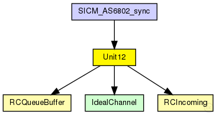
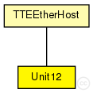

This documentation is released under the Creative Commons license
This documentation is released under the Creative Commons licenseunit1: configuration in unit1.ini.
The following diagram shows usage relationships between types. Unresolved types are missing from the diagram. Click here to see the full picture.
The following diagram shows inheritance relationships for this type. Unresolved types are missing from the diagram. Click here to see the full picture.
| Name | Type | Description |
|---|---|---|
| TTEEtherHost | compound module |
Module for a TTEthernet Host. Contains a EtherLLC for best-effort traffic, a TTEPHYPort module as physical port, sync module (Sync) and a TTEScheduler module. The Host is configured by the provided TTEthernet XML network configuration (network_configuration parameter) and uses the device_name parameter to find its config. The configuration is done by the BufferManager that deletes itself at runtime. |
| Name | Type | Description |
|---|---|---|
| SICM_AS6802_sync | network |
Small sample network with three hosts and one switch that shows how to configure the TTEthernet Model. Configuration in omnetpp.ini |
| Name | Type | Default value | Description |
|---|---|---|---|
| numApps | int | 0 | |
| numPorts | int | 1 | |
| hardware_delay | double | 0us |
| Name | Value | Description |
|---|---|---|
| display | bgb=994,495 | |
| node | ||
| labels | node |
| Name | Direction | Size | Description |
|---|---|---|---|
| ethg | inout |
Physical port of the host |
| Name | Type | Default value | Description |
|---|---|---|---|
| phy.tteOutput.tt_buffers | string | "" |
Comma seperated list of TTBuffers that send messages to this port |
| phy.tteInput.ct_marker | int | 0 |
Critical traffic marker of the buffer |
| phy.tteInput.ct_mask | int | 0 |
Critical traffic mask of the buffer |
| phy.tteInput.incomings | string | "" |
Comma seperated list of ctc modules the input uses |
| phy.mac.address | string | "auto" |
MAC address as hex string (12 hex digits), or "auto". "auto" values will be replaced by a generated MAC address in init stage 0. |
| phy.mac.duplexMode | bool | true |
must be set to "true", as EtherMACFullDuplex does not support half-duplex operation (parameter is present to reduce the risk of accidental misconfiguration) |
| phy.mac.txQueueLimit | int | 1000 |
maximum number of frames queued up for transmission in the internal queue (only used if queueModule==""); additional frames cause a runtime error |
| phy.mac.mtu | int | 1500B | |
| cli.destAddress | string | "" |
destination MAC address, or module path name of destination station; empty means off |
| cli.startTime | double | this.sendInterval |
time of sending the first request |
| cli.stopTime | double | 0 |
time of finish sending, 0 means forever |
| cli.sendInterval | double | uniform(0s,1s) |
interval between sending requests |
| cli.reqLength | int | 100B |
length of request packets |
| cli.respLength | int | 1KiB |
length of response packets |
| tteApp.buffers | string |
Comma seperated list of buffer modules the application is allowed to use |
|
| bgIn.destination_gates | string | "" |
Priority of the buffer (currently only used for rate-constrained traffic) int priority=default(-1); Critical traffic ID of the buffer int ct_id=default(0); Critical traffic marker of the buffer int ct_marker=default(0); Critical traffic mask of the buffer int ct_mask=default(0); Comma seperated list of gates where the frames of the buffer are delivered |
| bgIn.size | int | -1 |
Size of the buffer negative means infinite |
| bgIn.drop_new | bool | false |
Dropping policy, Should the newest frame instead of the oldest frame be dropped when the buffer is full (see size parameter) |
| bgOut.destination_gates | string | "" |
Priority of the buffer (currently only used for rate-constrained traffic) int priority=default(-1); Critical traffic ID of the buffer int ct_id=default(0); Critical traffic marker of the buffer int ct_marker=default(0); Critical traffic mask of the buffer int ct_mask=default(0); Comma seperated list of gates where the frames of the buffer are delivered |
| bgOut.size | int | -1 |
Size of the buffer negative means infinite |
| bgOut.drop_new | bool | false |
Dropping policy, Should the newest frame instead of the oldest frame be dropped when the buffer is full (see size parameter) |
| vl_pcf_in_IN.bag | int | 0tick |
Bandwidth allocation gap in number of ticks (Changes to this parameter will get active for future frames only) |
| vl_pcf_in_IN.jitter | int | 0tick |
Not used |
| vl_pcf_in_BUFIN.destination_gates | string | "" |
Priority of the buffer (currently only used for rate-constrained traffic) int priority=default(-1); Critical traffic ID of the buffer int ct_id=default(0); Critical traffic marker of the buffer int ct_marker=default(0); Critical traffic mask of the buffer int ct_mask=default(0); Comma seperated list of gates where the frames of the buffer are delivered |
| vl_pcf_in_BUFIN.priority | int | -1 |
Priority of the buffer (currently only used for rate-constrained traffic) |
| vl_pcf_in_BUFIN.ct_id | int | 0 |
Critical traffic ID of the buffer |
| vl_pcf_in_BUFIN.ct_marker | int | 0 |
Critical traffic marker of the buffer |
| vl_pcf_in_BUFIN.ct_mask | int | 0 |
Critical traffic mask of the buffer |
| vl_pcf_in_BUFIN.max_dispatch_delay | int | 0tick |
Not used |
| vl_pcf_in_BUFIN.bag | int | 0tick |
Bandwidth allocation gap in number of ticks (Changes to this parameter will get active for future frames only) |
| vl_pcf_in_BUFIN.jitter | int | 0tick |
Not used |
| vl_pcf_in_BUFIN.size | int | -1 |
Size of the buffer negative means infinite |
| vl_pcf_in_BUFIN.drop_new | bool | false |
Dropping policy, Should the newest frame instead of the oldest frame be dropped when the buffer is full (see size parameter) |
| vl_pcf_out_IN.bag | int | 0tick |
Bandwidth allocation gap in number of ticks (Changes to this parameter will get active for future frames only) |
| vl_pcf_out_IN.jitter | int | 0tick |
Not used |
| vl_pcf_out_BUFIN.destination_gates | string | "" |
Priority of the buffer (currently only used for rate-constrained traffic) int priority=default(-1); Critical traffic ID of the buffer int ct_id=default(0); Critical traffic marker of the buffer int ct_marker=default(0); Critical traffic mask of the buffer int ct_mask=default(0); Comma seperated list of gates where the frames of the buffer are delivered |
| vl_pcf_out_BUFIN.priority | int | -1 |
Priority of the buffer (currently only used for rate-constrained traffic) |
| vl_pcf_out_BUFIN.ct_id | int | 0 |
Critical traffic ID of the buffer |
| vl_pcf_out_BUFIN.ct_marker | int | 0 |
Critical traffic marker of the buffer |
| vl_pcf_out_BUFIN.ct_mask | int | 0 |
Critical traffic mask of the buffer |
| vl_pcf_out_BUFIN.max_dispatch_delay | int | 0tick |
Not used |
| vl_pcf_out_BUFIN.bag | int | 0tick |
Bandwidth allocation gap in number of ticks (Changes to this parameter will get active for future frames only) |
| vl_pcf_out_BUFIN.jitter | int | 0tick |
Not used |
| vl_pcf_out_BUFIN.size | int | -1 |
Size of the buffer negative means infinite |
| vl_pcf_out_BUFIN.drop_new | bool | false |
Dropping policy, Should the newest frame instead of the oldest frame be dropped when the buffer is full (see size parameter) |
| vl_pcf_in_CS.bag | int | 0tick |
Bandwidth allocation gap in number of ticks (Changes to this parameter will get active for future frames only) |
| vl_pcf_in_CS.jitter | int | 0tick |
Not used |
| vl_pcf_in_BUFCS.destination_gates | string | "" |
Priority of the buffer (currently only used for rate-constrained traffic) int priority=default(-1); Critical traffic ID of the buffer int ct_id=default(0); Critical traffic marker of the buffer int ct_marker=default(0); Critical traffic mask of the buffer int ct_mask=default(0); Comma seperated list of gates where the frames of the buffer are delivered |
| vl_pcf_in_BUFCS.priority | int | -1 |
Priority of the buffer (currently only used for rate-constrained traffic) |
| vl_pcf_in_BUFCS.ct_id | int | 0 |
Critical traffic ID of the buffer |
| vl_pcf_in_BUFCS.ct_marker | int | 0 |
Critical traffic marker of the buffer |
| vl_pcf_in_BUFCS.ct_mask | int | 0 |
Critical traffic mask of the buffer |
| vl_pcf_in_BUFCS.max_dispatch_delay | int | 0tick |
Not used |
| vl_pcf_in_BUFCS.bag | int | 0tick |
Bandwidth allocation gap in number of ticks (Changes to this parameter will get active for future frames only) |
| vl_pcf_in_BUFCS.jitter | int | 0tick |
Not used |
| vl_pcf_in_BUFCS.size | int | -1 |
Size of the buffer negative means infinite |
| vl_pcf_in_BUFCS.drop_new | bool | false |
Dropping policy, Should the newest frame instead of the oldest frame be dropped when the buffer is full (see size parameter) |
| vl_pcf_out_CS.bag | int | 0tick |
Bandwidth allocation gap in number of ticks (Changes to this parameter will get active for future frames only) |
| vl_pcf_out_CS.jitter | int | 0tick |
Not used |
| vl_pcf_out_BUFCS.destination_gates | string | "" |
Priority of the buffer (currently only used for rate-constrained traffic) int priority=default(-1); Critical traffic ID of the buffer int ct_id=default(0); Critical traffic marker of the buffer int ct_marker=default(0); Critical traffic mask of the buffer int ct_mask=default(0); Comma seperated list of gates where the frames of the buffer are delivered |
| vl_pcf_out_BUFCS.priority | int | -1 |
Priority of the buffer (currently only used for rate-constrained traffic) |
| vl_pcf_out_BUFCS.ct_id | int | 0 |
Critical traffic ID of the buffer |
| vl_pcf_out_BUFCS.ct_marker | int | 0 |
Critical traffic marker of the buffer |
| vl_pcf_out_BUFCS.ct_mask | int | 0 |
Critical traffic mask of the buffer |
| vl_pcf_out_BUFCS.max_dispatch_delay | int | 0tick |
Not used |
| vl_pcf_out_BUFCS.bag | int | 0tick |
Bandwidth allocation gap in number of ticks (Changes to this parameter will get active for future frames only) |
| vl_pcf_out_BUFCS.jitter | int | 0tick |
Not used |
| vl_pcf_out_BUFCS.size | int | -1 |
Size of the buffer negative means infinite |
| vl_pcf_out_BUFCS.drop_new | bool | false |
Dropping policy, Should the newest frame instead of the oldest frame be dropped when the buffer is full (see size parameter) |
| vl_pcf_in_CA.bag | int | 0tick |
Bandwidth allocation gap in number of ticks (Changes to this parameter will get active for future frames only) |
| vl_pcf_in_CA.jitter | int | 0tick |
Not used |
| vl_pcf_in_BUFCA.destination_gates | string | "" |
Priority of the buffer (currently only used for rate-constrained traffic) int priority=default(-1); Critical traffic ID of the buffer int ct_id=default(0); Critical traffic marker of the buffer int ct_marker=default(0); Critical traffic mask of the buffer int ct_mask=default(0); Comma seperated list of gates where the frames of the buffer are delivered |
| vl_pcf_in_BUFCA.priority | int | -1 |
Priority of the buffer (currently only used for rate-constrained traffic) |
| vl_pcf_in_BUFCA.ct_id | int | 0 |
Critical traffic ID of the buffer |
| vl_pcf_in_BUFCA.ct_marker | int | 0 |
Critical traffic marker of the buffer |
| vl_pcf_in_BUFCA.ct_mask | int | 0 |
Critical traffic mask of the buffer |
| vl_pcf_in_BUFCA.max_dispatch_delay | int | 0tick |
Not used |
| vl_pcf_in_BUFCA.bag | int | 0tick |
Bandwidth allocation gap in number of ticks (Changes to this parameter will get active for future frames only) |
| vl_pcf_in_BUFCA.jitter | int | 0tick |
Not used |
| vl_pcf_in_BUFCA.size | int | -1 |
Size of the buffer negative means infinite |
| vl_pcf_in_BUFCA.drop_new | bool | false |
Dropping policy, Should the newest frame instead of the oldest frame be dropped when the buffer is full (see size parameter) |
| vl_pcf_out_CA.bag | int | 0tick |
Bandwidth allocation gap in number of ticks (Changes to this parameter will get active for future frames only) |
| vl_pcf_out_CA.jitter | int | 0tick |
Not used |
| vl_pcf_out_BUFCA.destination_gates | string | "" |
Priority of the buffer (currently only used for rate-constrained traffic) int priority=default(-1); Critical traffic ID of the buffer int ct_id=default(0); Critical traffic marker of the buffer int ct_marker=default(0); Critical traffic mask of the buffer int ct_mask=default(0); Comma seperated list of gates where the frames of the buffer are delivered |
| vl_pcf_out_BUFCA.priority | int | -1 |
Priority of the buffer (currently only used for rate-constrained traffic) |
| vl_pcf_out_BUFCA.ct_id | int | 0 |
Critical traffic ID of the buffer |
| vl_pcf_out_BUFCA.ct_marker | int | 0 |
Critical traffic marker of the buffer |
| vl_pcf_out_BUFCA.ct_mask | int | 0 |
Critical traffic mask of the buffer |
| vl_pcf_out_BUFCA.max_dispatch_delay | int | 0tick |
Not used |
| vl_pcf_out_BUFCA.bag | int | 0tick |
Bandwidth allocation gap in number of ticks (Changes to this parameter will get active for future frames only) |
| vl_pcf_out_BUFCA.jitter | int | 0tick |
Not used |
| vl_pcf_out_BUFCA.size | int | -1 |
Size of the buffer negative means infinite |
| vl_pcf_out_BUFCA.drop_new | bool | false |
Dropping policy, Should the newest frame instead of the oldest frame be dropped when the buffer is full (see size parameter) |
| vl_pcf_in_CS1.bag | int | 0tick |
Bandwidth allocation gap in number of ticks (Changes to this parameter will get active for future frames only) |
| vl_pcf_in_CS1.jitter | int | 0tick |
Not used |
| vl_pcf_in_BUFCS1.destination_gates | string | "" |
Priority of the buffer (currently only used for rate-constrained traffic) int priority=default(-1); Critical traffic ID of the buffer int ct_id=default(0); Critical traffic marker of the buffer int ct_marker=default(0); Critical traffic mask of the buffer int ct_mask=default(0); Comma seperated list of gates where the frames of the buffer are delivered |
| vl_pcf_in_BUFCS1.priority | int | -1 |
Priority of the buffer (currently only used for rate-constrained traffic) |
| vl_pcf_in_BUFCS1.ct_id | int | 0 |
Critical traffic ID of the buffer |
| vl_pcf_in_BUFCS1.ct_marker | int | 0 |
Critical traffic marker of the buffer |
| vl_pcf_in_BUFCS1.ct_mask | int | 0 |
Critical traffic mask of the buffer |
| vl_pcf_in_BUFCS1.max_dispatch_delay | int | 0tick |
Not used |
| vl_pcf_in_BUFCS1.bag | int | 0tick |
Bandwidth allocation gap in number of ticks (Changes to this parameter will get active for future frames only) |
| vl_pcf_in_BUFCS1.jitter | int | 0tick |
Not used |
| vl_pcf_in_BUFCS1.size | int | -1 |
Size of the buffer negative means infinite |
| vl_pcf_in_BUFCS1.drop_new | bool | false |
Dropping policy, Should the newest frame instead of the oldest frame be dropped when the buffer is full (see size parameter) |
| vl_pcf_in_BUFCA1.destination_gates | string | "" |
Priority of the buffer (currently only used for rate-constrained traffic) int priority=default(-1); Critical traffic ID of the buffer int ct_id=default(0); Critical traffic marker of the buffer int ct_marker=default(0); Critical traffic mask of the buffer int ct_mask=default(0); Comma seperated list of gates where the frames of the buffer are delivered |
| vl_pcf_in_BUFCA1.priority | int | -1 |
Priority of the buffer (currently only used for rate-constrained traffic) |
| vl_pcf_in_BUFCA1.ct_id | int | 0 |
Critical traffic ID of the buffer |
| vl_pcf_in_BUFCA1.ct_marker | int | 0 |
Critical traffic marker of the buffer |
| vl_pcf_in_BUFCA1.ct_mask | int | 0 |
Critical traffic mask of the buffer |
| vl_pcf_in_BUFCA1.max_dispatch_delay | int | 0tick |
Not used |
| vl_pcf_in_BUFCA1.bag | int | 0tick |
Bandwidth allocation gap in number of ticks (Changes to this parameter will get active for future frames only) |
| vl_pcf_in_BUFCA1.jitter | int | 0tick |
Not used |
| vl_pcf_in_BUFCA1.size | int | -1 |
Size of the buffer negative means infinite |
| vl_pcf_in_BUFCA1.drop_new | bool | false |
Dropping policy, Should the newest frame instead of the oldest frame be dropped when the buffer is full (see size parameter) |
| vl_pcf_in_BUFIN1.destination_gates | string | "" |
Priority of the buffer (currently only used for rate-constrained traffic) int priority=default(-1); Critical traffic ID of the buffer int ct_id=default(0); Critical traffic marker of the buffer int ct_marker=default(0); Critical traffic mask of the buffer int ct_mask=default(0); Comma seperated list of gates where the frames of the buffer are delivered |
| vl_pcf_in_BUFIN1.priority | int | -1 |
Priority of the buffer (currently only used for rate-constrained traffic) |
| vl_pcf_in_BUFIN1.ct_id | int | 0 |
Critical traffic ID of the buffer |
| vl_pcf_in_BUFIN1.ct_marker | int | 0 |
Critical traffic marker of the buffer |
| vl_pcf_in_BUFIN1.ct_mask | int | 0 |
Critical traffic mask of the buffer |
| vl_pcf_in_BUFIN1.max_dispatch_delay | int | 0tick |
Not used |
| vl_pcf_in_BUFIN1.bag | int | 0tick |
Bandwidth allocation gap in number of ticks (Changes to this parameter will get active for future frames only) |
| vl_pcf_in_BUFIN1.jitter | int | 0tick |
Not used |
| vl_pcf_in_BUFIN1.size | int | -1 |
Size of the buffer negative means infinite |
| vl_pcf_in_BUFIN1.drop_new | bool | false |
Dropping policy, Should the newest frame instead of the oldest frame be dropped when the buffer is full (see size parameter) |
| vl_pcf_in_IN1.bag | int | 0tick |
Bandwidth allocation gap in number of ticks (Changes to this parameter will get active for future frames only) |
| vl_pcf_in_IN1.jitter | int | 0tick |
Not used |
| vl_pcf_in_CA1.bag | int | 0tick |
Bandwidth allocation gap in number of ticks (Changes to this parameter will get active for future frames only) |
| vl_pcf_in_CA1.jitter | int | 0tick |
Not used |
// // unit1: configuration in unit1.ini. // // - Sends time-triggered messages at 1ms with VL-ID 100 // module Unit12 extends TTEEtherHost { @display("bgb=994,495"); submodules: //IN FRAMES vl_pcf_in_IN: RCIncoming { parameters: @display("p=448,60"); } vl_pcf_in_BUFIN: RCQueueBuffer { parameters: @display("p=571,60"); } vl_pcf_out_IN: RCIncoming { parameters: @display("p=783,124"); } vl_pcf_out_BUFIN: RCQueueBuffer { parameters: @display("p=906,124"); } //CS FRAMES vl_pcf_in_CS: RCIncoming { parameters: @display("p=448,199"); } vl_pcf_in_BUFCS: RCQueueBuffer { parameters: @display("p=571,199"); } vl_pcf_out_CS: RCIncoming { parameters: @display("p=783,55"); } vl_pcf_out_BUFCS: RCQueueBuffer { parameters: @display("p=906,55"); } //CA FRAMES vl_pcf_in_CA: RCIncoming { parameters: @display("p=448,130"); } vl_pcf_in_BUFCA: RCQueueBuffer { parameters: @display("p=571,130"); } vl_pcf_out_CA: RCIncoming { parameters: @display("p=790,199"); } vl_pcf_out_BUFCA: RCQueueBuffer { parameters: @display("p=906,199"); } //CS FRAMES vl_pcf_in_CS1: RCIncoming { parameters: @display("p=448,425"); } vl_pcf_in_BUFCS1: RCQueueBuffer { parameters: @display("p=571,425"); } vl_pcf_in_BUFCA1: RCQueueBuffer { parameters: @display("p=571,356"); } vl_pcf_in_BUFIN1: RCQueueBuffer { parameters: @display("p=571,286"); } //IN FRAMES vl_pcf_in_IN1: RCIncoming { parameters: @display("p=448,286"); } //CA FRAMES vl_pcf_in_CA1: RCIncoming { parameters: @display("p=448,356"); } connections: vl_pcf_in_IN.out --> vl_pcf_in_BUFIN.in; vl_pcf_out_IN.out --> vl_pcf_out_BUFIN.in; vl_pcf_in_CS.out --> vl_pcf_in_BUFCS.in; vl_pcf_out_CS.out --> vl_pcf_out_BUFCS.in; vl_pcf_in_CA.out --> vl_pcf_in_BUFCA.in; vl_pcf_out_CA.out --> vl_pcf_out_BUFCA.in; vl_pcf_in_IN1.out --> vl_pcf_in_BUFIN1.in; vl_pcf_in_CS1.out --> vl_pcf_in_BUFCS1.in; vl_pcf_in_CA1.out --> vl_pcf_in_BUFCA1.in; }
This documentation is released under the Creative Commons license